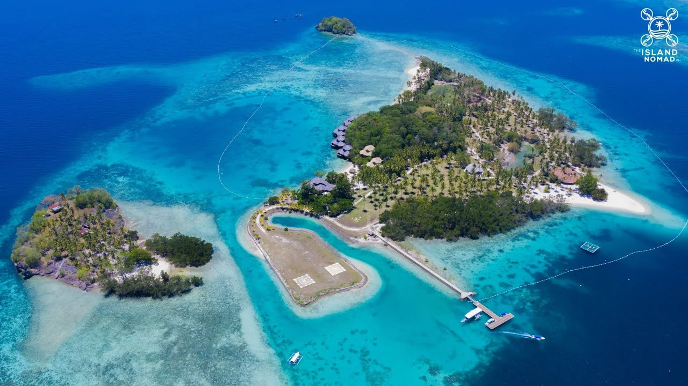
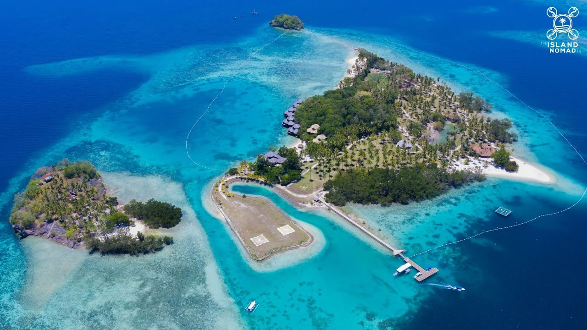
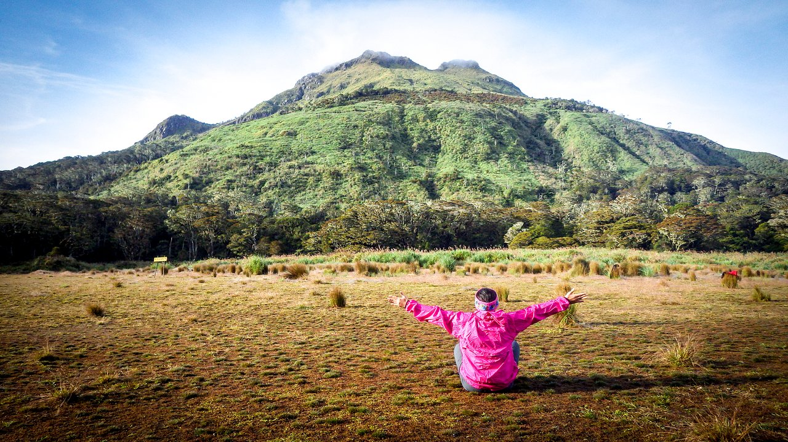
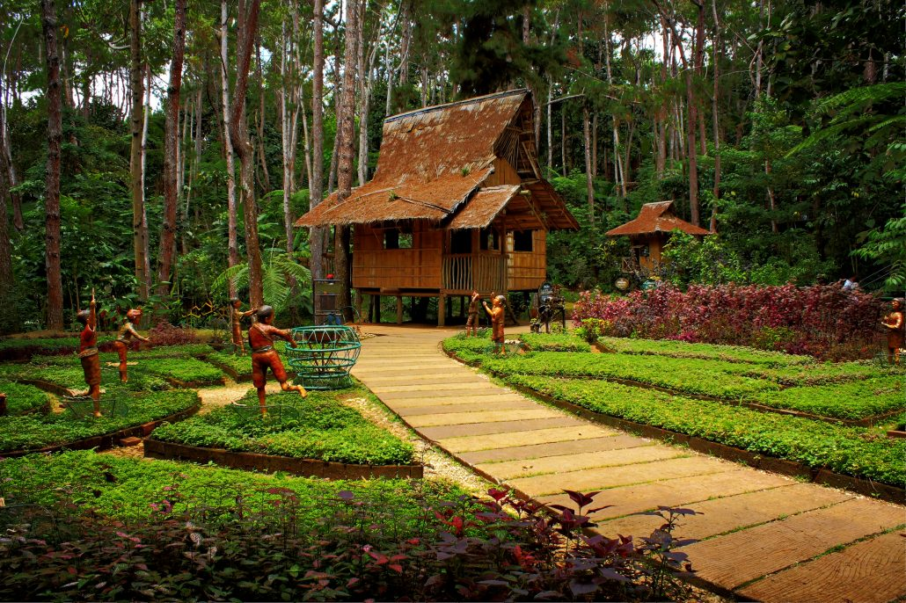
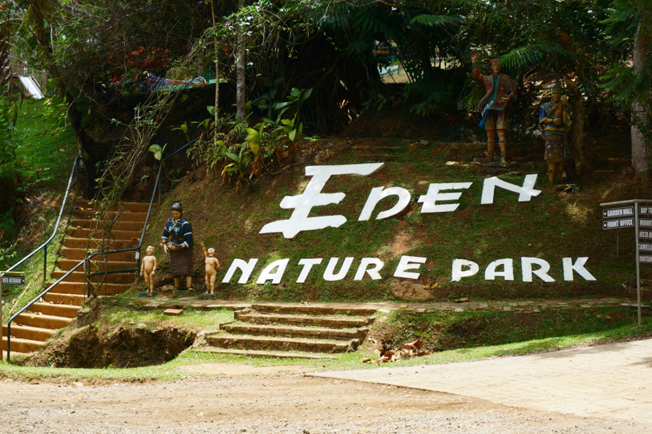
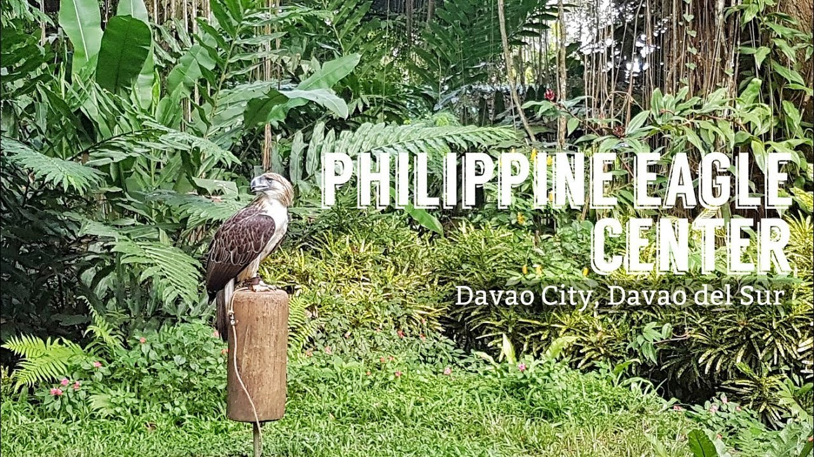
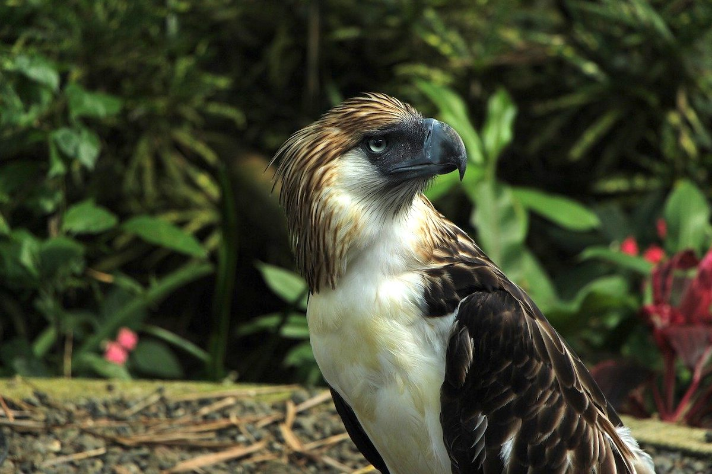
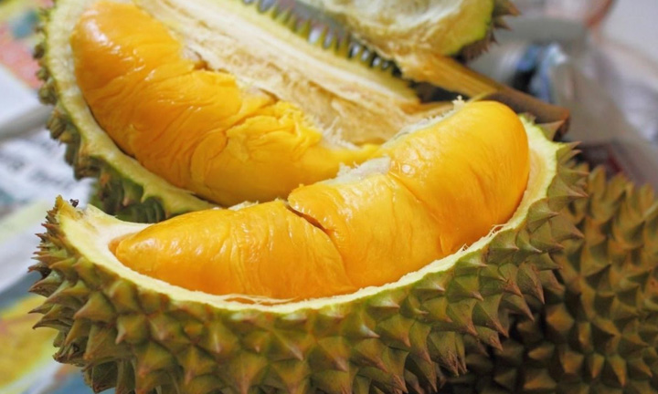
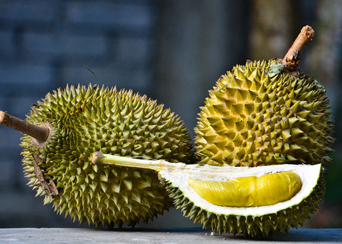

Travel Tips
Experience Davao's melting pot of culture. Learn about the top tourist spots that you should visit, where the best resorts and hotels are, and which finest delicacies to try. Make the most out of your trip by reading this travel guide.
There are many beautiful destinations worth visiting when planning your trip to Mindanao in the Philippines. One of the places that you should highly consider going to first is Davao. A trip here will treat you to a fun escapade to beaches, waterfalls, and food adventures.
Davao is blessed with several natural resources, that’s why it’s a nature lover's perfect destination. For one, Davao is home to the Philippine Eagle. Also known as the Monkey-Eating Eagle, the Philippine Eagle is an endangered species endemic to the country.
Davao Travel Requirements and Guidelines | COVID-19 New Normal
Travelers who want to experience Davao’s natural attractions and tourist spots can now do so as long as they comply with the local government’s guidelines to prevent the spread of COVID-19.
- Who are allowed to go to Davao?
All tourists regardless of vaccination status who want to visit Davao City can freely enter without presenting any documents, except those that will be needed for security checks, such as a valid ID. Those who want to explore the rest of Davao Province are allowed, as long as they follow the requirements of their destination’s local government unit. These include a negative RT-PCR test result taken within 72 hours prior to arrival in Davao, a valid Safe Davao QR code from profiles. safe-davao.com, pre-booking at DOT-accredited hotels and resorts in Davao, and registration with staysafe.ph.
-
What are the entry points in Davao?
The most convenient way to get to here is via a flight to Davao's Francisco Bangoy International Airport, more commonly known as Davao International Airport. You can also fly from different airports in the country to get here. Some of the most common routes are a Manila to Davao flight, Cebu to Davao flight, and Cagayan to Davao flight.
- What travel requirements do you need to prepare?
- Davao de Oro
- -Valid ID
- Davao del Norte
- -Valid ID
- -Those visiting Samal Island need to be fully vaccinated* and must be able to present a vaccination card to prove their fully vaccinated status.
- Davao del Sur
- -Valid ID
- Davao Occidental
- -Valid ID
- -Only fully vaccinated individuals are allowed to enter Davao Occidental for leisure purposes. They need to present a vaccination card that proves their fully vaccinated status.
- -Negative RT-PCR or saliva RT-PCR test result 3 days prior to travel.
- -Pre-booking at DOT-accredited hotels and resorts in Davao.
- -Registration with staysafe.ph.
- Davao Oriental
- -Valid ID
- -Those visiting Mati City who are fully vaccinated* are exempted from presenting a negative COVID-19 test but must be able to present a vaccination card to prove their fully vaccinated status. Unvaccinated and partially vaccinated individuals traveling to Mati City need to present a negative RT-PCR test result.
Here are the requirements that you need to prepare before going to Davao Province:
Best Time to Go to Davao
When planning your trip to Davao, it's essential to take note of the season, climate and weather to have a hassle-free adventure. This is to avoid canceled trips due to inclement weather that might occur at any time of day. It is also essential when packing your things, as it would serve as a guideline on what you have to bring and wear during your trip to Davao.
Dry and Summer Season | January to May
As with the whole Philippines, Davao City only has two seasons, the dry summer season and the wet season. If you have a lot of outdoor destinations included in your Davao itinerary, it's best to book flights to the Philippines during the dry months of January to April. These months have the least chances of rainfall, so you can fully enjoy the outdoor activities and water adventures.
Kadayawan Festival | August
Davao celebrates its annual Kadayawan Festival every third week of August. Recognized as the “Mother of all Mindanao festivals” Kadayawan is an extravagant affair that features flower floats parades, street dancing, and trade fairs. The festival is held in commemoration of Davao’s indigenous people and their contribution to the city’s rich cultural heritage. Kadayawan Festival is also a thanksgiving celebration for a bountiful harvest. Visiting Davao City during the Kadayawan Festival is a great way to experience the city and be immersed in its vibrant culture.
What to See and Do in Davao
Davao has so much to offer to travelers. The city is an excellent blend of both natural and manmade attractions which are top destinations for both local and international travelers. Whether you want to know more about the cultural heritage of the city, go on an adventurous trip or relax and have fun, there are a lot of Davao tourist spots that you can explore.
Go Island-Hopping to Samal Island
 

A trip to Davao would not be complete without checking out Samal Island. You can swim to your heart’s content in the sparkling waters of Samal, or you can take your Davao adventure to the next level by going on a Samal Island-hopping escapade.
The tour can take you to other neighboring islands such as Malipano Island, Diaz Island, Taklobo Sanctuary, and Dela Paz Island. You can swim, snorkel, or simply enjoy a leisurely beach walk along the Starfish Sanctuary. The best part of the island hopping is getting to visit the stunning Samal Coral Garden.
You will be given free goggles so you can witness this underwater marvel. The vibrant and gigantic corals of Samal’s expansive coral garden will take your breath away.
Hike Mount Apo
If you’re an experienced hiker looking for your next challenging climb, then head to Davao where you can find the Philippines ‘ highest mountain, Mount Apo. Considered as the King of Philippine Peaks, Mount Apo is also on top of the list of the highest mountains in Southeast Asia.
The mountain an elevation of 10,311 feet. Because of the level of difficulty, climbing Mount Apo is only recommended for experienced climbers. The stunning landscape makes up for the extreme conditions you will experience when braving Mount Apo. Most experienced hikers climb the summit for the months of March, April, and October.
Before reaching the top of Mount Apo, you will come across a mystical crater lake naturally created by volcanic activities. This mountain also houses rubber plantations as well as the Tudaya Fall, along with wild deer and boars.
Explore Eden Nature Park
 Eden Nature Park is an expansive eco-adventure complex nestled in the hills of Davao. If you want to commune with nature, try out exciting recreational activities, or simply relax, then include Eden Nature Park in your Davao itinerary
Eden Nature Park has a number of attractions that you can tour via a guided shuttle. There is a Bird Park where you can check out their aviaries and the different birds that call them home. You can also find a Deer Park which houses over thirty Philippine Deers. If you love flowers, Eden’s flower garden will surely delight you.
You can also go on a short hike through the Park’s hiking trails. If you’re curious about the indigenous tribes in Mindanao, Tinubdan Cultural Park will fascinate you. Take your Eden Nature Park adventure up a notch by trying their heart-pumping activities such as the skyrider, skycycle, and the sky swing.
Visit the Philippine Eagle Center
 The Philippine Eagle or the Monkey-Eating Eagle is an endangered species that can only be found in the Philippines. It is also considered as the national bird of the country. To protect and conserve these birds of prey, the Philippine Eagle Center in Davao was established.
The Philippine Eagle Center is a conservation breeding facility, but it has also developed into one of the top tourist destinations in Davao.
The center is home to 36 Philippine Eagles, with 18 of them are captive-bred. It is also a sanctuary for 10 other species of birds, 4 species of mammals, and 2 species of reptiles.
Here you can watch the magnificent eagles feed and fly freely in a large protected enclosure. The Philippine Eagle Every cent that is donated to the Philippine Eagle Center is spent on the conservation of the country’s national bird.
This center dedicated efforts and time to protect the endangered species while providing an interesting and fun platform for locals and visitors.
What to Eat and Drink in Davao
Any traveler would be famished after exploring the many tourist attractions of Davao. Luckily, Davao is a treasure trove of culinary experiences and unique local treats.
Local Cuisine
 Considered as the “King of Fruits”, the durian is known for its strong pungent aroma and its unique flavor. Underneath the thorns of the durian is a thick savory-sweet yellow meat like no other.
The popularity of durian has inspired different flavored delicacies; from durian yema (a sticky sweet made from egg yolk), durian candy, durian Tart, durian Ice Cream, and even durian Cake. A trip to Davao would not be complete without trying these durian flavored treats.
Recommended Best Restaurants and Bars
Davao does not run short of restaurants. From Visayan cuisine, Filipino street food, Chinese cuisine, to Halal restaurants, you have plenty to choose from. Here are some of the recommended places to dine and drink in Davao.
- Lachi's
- If you’re looking for sumptuous home-cooked meals and mouthwatering desserts, drop by Lachi’s. Davao’s Lachi’s is a family-run restaurant in Downtown Davao.
- This restaurant initially made its name selling delicious desserts, but you can also get hearty meals in this rustic restaurant. When you’re at Lachi’s be sure to try their famous Durian cheesecake and carrot cake!
- Roxas Night Market
- There is no better place to experience authentic Filipino street food in Davao than at the Roxas Night Market. Here you can taste different cuisines that Davao has to offer; it the ultimate food trip destination in the city.
- You can find several stalls that serve barbecue, home-cooked and grilled fresh seafood, veggies, meat, and many more. Roxas Night Market is also a great place to hang out, mingle with locals, and enjoy a cold drink.
- Kusina sa Subli
- If you want to experience Filpino comfort food and fresh seafood, make a beeline for Kusina sa Subli. This restaurant serves home-cooked type meals and offers boodle feasts as well.
- However, their most popular dish is the Southside Burger and Pakfry. Kusina sa Subli is also known for its grilled seafood, so try their Grilled Tuna Belly when you get the chance.
- Chef Lu’s Restaurant
- If you’re craving for Chinese cuisine, Chef Lu’s Restaurant comes highly recommended. Chef Lu’s Restaurant serves wok-cooked Chinese dishes. They also offer traditional dishes prepared with a modern twist.
- Aside from Chinese cuisine, Chef Lu’s also has a full-service sushi bar that also serves cocktail drinks and beer. What you shouldn’t miss out in Chef Lu’s should be their authentic Szechuan cuisine experience.